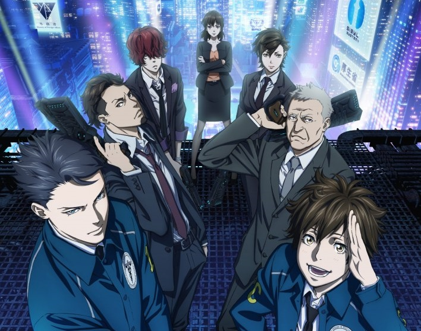
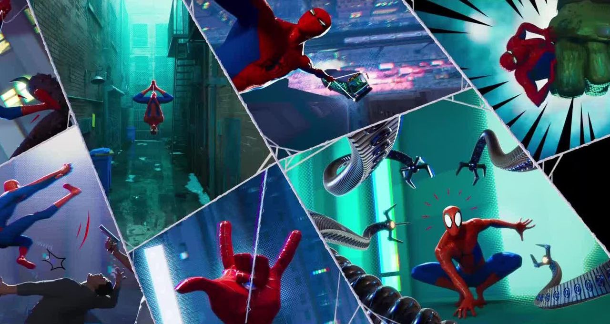

RSS Feed
RSS Feed
Animes, Shows & Movies Reviews 5
16 Feb 2020Previously: One / Two / Three / Four
Dr Stone
Doctor Stone is one of the three bombshells of the summer & fall seasons, all three of which are shonen that adapt successful mangas.
The premise of Dr Stone is that all humans are turned to stone but somehow kept alive. Thousands of years later, the first people start to emerge from their stone shells. One of them is Senku, a teen prodigy, who sets out to rebuild civilization, one technology at a time.
So basically Primitive Technology, the anime.
In many ways, the anime reminds me of Log Horizon. In Log Horizon, the material conditions are not a problem, but the hero has to rebuilt society given the disenfranchisement of the population. In Dr Stone, it's the reverse, Senku has to rebuild civilization but people problem are relatively trivial (of course, there is some conflict because a story without conflict would be boring).
The story is solid, and at times downright touching. One trait that sticks out for me is the show's optimism. I'm into that.
Enen No Shouboutai (Fire Force)
Onto our second big summer show.
Fire Force is about a world where spontaneous combustion is a thing, and combusted people turn into an "infernal". To combat this, specialized "fire force" units exist. People in the population also manifest special pyrokinetic powers — on which the fire force leans heavily.
The universe is perhaps not the most intricate, but it is interesting enough. The show's strength lies in its visual goodness: good animation and in particular beautiful combats (though Demon Slayer still takes the top spot there).
All around, it's a solid show in a somewhat interesting universe — mostly a good application of the traditional shonen formula.
Oh, and the opening theme is a real banger!
Vinland Saga
And now for the third one.
Vinland Saga is grittier than most anime: it's more violent, and more mature in its themes. There is killing and non-vilainous characters that don't think twice about killing — something that doesn't happen all that often in anime. In general, the show features ambiguous characters and lets you a lot of space to figure out for yourself how you feel about them, which is a breath of fresh air.
So what is it about? Well, vikings obviously. The manga is inspired by the eponymous icelandic sagas. The meat of the action in this season takes place during the Danish invasion of England of 1069-1070.
(The following paragraphs have mild spoilers for the first few episodes.)
More to the point: the show follows Thorfinn, a young viking that tags along a band of mercenaries following dramatic circumstances. These circumstances have left him bitter and emotionally stunted.
The story is really interesting, the show has really awesome looking scenes and backgrounds. Perhaps the biggest weakness is in fact the character of Thorfinn himself, which is fairly one-sided and unlikeable. But this could in fact be a strength in the long run, if we see him slowly transform out of his current dark self. Spending time with the character makes his dark character more believable and feel more entrenched (although it must be said that the too-fast transformation of another character this season kind of undermines this hypothesis). And the story (which revolves around battles and politics) is good enough that it doesn't detract.
In fact, this first season is arguably not about Thorfinn at all, but about his morally ambiguous mentor, Askeladd. Youtuber Gigguk thinks so too and has some nice tings to say about the show, which he picked as his anime of the year.
I'm definitely eager for more of this one.
Gankutsuou: The Count of Monte Cristo
Now for something a bit older. Gankutsuou first aired in 2004-2005 and is an adaptation of Alexandre Dumas' "The Count of Monte Cristo", only set in an inter-galactic future.
I must admit I haven't read the original, nor seen the Gerard Depardieu miniseries (though I should, if he's half as brilliant as in Cyrano de Bergerac), so I can't really comment on how it compares.
The story is pretty nice too, without being insane, with multiple threads progressing throughout the story. But, most of all, it's a proper story, not an episodic show, nor even featuring arcs. The show tells a story of revenge and friendship from start to finish, and I think it's a pretty good one.
In fact, it's good enough to warrant watching even though the anime is pretty ugly. It might even be the ugliest anime I've ever watched. But it's not ugly in a conventional sense of being poorly drawn, but rather because of deliberate artistic choices.
The main gimmick is the (over)use of textures. Often, a character's clothes or hair will be a texture that is kept fixed in the background, even as the character moves on the screen. This sometimes works nicely (especially for hair, see picture below), but often it's just jarring and weird. The backgrounds are also distinctively garrish, and often blurry for no good reason.

So the recommendation is easy here. If you're first and foremost a story man, just like myself, go watch this. If you're in for the pretties, give it a wide berth, unless you're into conceptual art.
Shinsekai Yori (From The New World)
I binged this one with a couple of friends in three sittings.
It's maybe the most thoughtful anime I've seen, in the sense that it explores rather complex themes with a lot of nuance. You're not told what to think, and antagonists often have very valid modes of reasoning.
In terms of story, it's quite nicely constructed and avoids the common anime trap of doing too many information dumps (though there are some of those too). A big part of that comes from basically having a big part of how society operates remain a mystery from the perspective of the protagonists, which are children are the beginning of the show.
So what it is about? Well, it's quite complex, so I'm just going to quote from MyAnimeList directly:
Following a sudden outbreak of psychokinesis in 0.1% of the population, a rapid transformation swept the world. The godlike ability to manipulate matter remotely turned many power wielders to violence, inciting a long period of upheaval. Finally, after a chaotic era shaped by the rise and fall of oppressive regimes, the psychic humans were able to achieve a fragile peace by isolating their society, creating a new world bound by complex rules.
In the town of Kamisu 66, 12-year-old Saki Watanabe has just awakened to her powers and is relieved to rejoin her friends—the mischievous Satoru Asahina, the shy Mamoru Itou, the cheerful Maria Akizuki, and Shun Aonuma, a mysterious boy whom Saki admires—at Sage Academy, a special school for psychics. However, unease looms as Saki begins to question the fate of those unable to awaken to their powers, and the children begin to get involved with secretive matters such as the rumored Tainted Cats said to abduct children.
And it touches themes around slavery, racism/specism, alienation, how to manage dangers to society, ...
Strongly recommended!
The Mandalorian

The Mandalorian was an instant crush that did not disappoint. It's what Star Wars can be at its best.
The story follows the titular Mandalorian (a member of an ancient warrior society, who mostly subsist as bounty hunters in the story's present time), just after the fall of the empire following the first (Luke & Leia's) Star Wars trilogy.
The show has this space-western feel that is present through the first trilogy, but unencombered with the epic struggle for the fate of the world, which ultimately makes for a better story.
The story is rather barebones (protect baby yoda, y'all), but it works, because the execution is pitch-perfect. The cast is amazing (and packed full of big names who show exactly why they're famous), and the pacing is spot on.
The music works really well with the story. Another nice touch is the concept art shown during the credits at the end of each episode.
It's difficult to say why The Mandalorian so good, a combination of everything working well together. But it is so good, so go and watch it!
The Witcher
I went into this show not expecting much. I only played The Witcher 2 for two or three hours before losing interest, and I haven't read any of the books either. It expected a bit of a "me too" fantasy show.
But I really enjoyed it! It's not a masterpiece but each episode is entertaining in its own right, and I liked the universe.
I didn't expect for Geralt to be my favourite character. I figured the strong silent type is rarely interesting, but there's a touch of humor and humanity (vulnerability, even) that really makes the character come to life. Henry Cavill really does good work here, and is given much better material to work with than in the Superman movies.
The other two characters, Yennefer and Ciri, I liked less. Yennefer is downright annoying at times. On the other hand, her character sees a lot of interesting evolution. Ciri doesn't have as much screen time, and is mostly just bumbling around, so not much to say there.
I watched the show with my girlfriend, who didn't like it as much. She said she probably would have dropped it if we weren't watching together. She didn't like that the presentation — which uses multiple plotlines — was so confused.
That's a criticism I heard before starting the show too. For me, it was maybe a tiny bit positive, because I actually enjoy hitting the pause button, and trying to figure things out (in this case, how each plot line related temporally to one another).
But in the end, there is no twist with regard to plot lines or timelines. There are simply three plotlines, following each of the three main characters. Each time you see a given character, it will always be temporally later than when you last saw him — but there are occasionally some large skips (~10 years, which is made possible by the fact that Geralt and Yennefer don't age). Ciri's timeline is the furthest ahead, and the two other character eventually catch up to it. For Geralt and Yennefer, the plotlines go back further and interleave a bit, until they meet, at which point the new plotline is in sync (each new scene temporally later than the last).
If you like the books, the games, or just fantasy in general, give this one a try.

His Dark Materials
I also went into this one with little expectations (having not read the original book), but ended up liking it quite less than The Witcher. In fact, I dropped it after 3 or 4 episodes.
I can't really say it's bad, but after these few first episodes, I wasn't especially finding the characters attaching. The show didn't give me good reasons to care about the universe it had set up.
I thought it was pretty strange that the relationship between people and their daemons wasn't explored more, as it seems to be one of the defining characteristic of the universe. In fact, daemons are hardly treated as characters at all, given little to say and to be besides an accessory for characters. This is puzzling given that daemons are clearly separate entities with their own thoughts and will.
I also just looked at the summary for the whole book series (spoilers, obviously), and seriously: what the fucking fuck.
Sword Art Online Season 3 (Part 2)
I thought it would be hard to do worse than Part 1, but ostensibly I was wrong. Part 1 had at least a decent premise, which it squandered in an uninspired "tower boss battles" ending arc.
Part 2 promises to shake things up with a big battle to decide the fate of the underworld. Doesn't sound too bad. Except it's not a big battle — just a series of skirmishes who serves to set up encounter between key characters, featuring predominantly integrity knights.
It's not impressive, and not really interesting. I dropped it about after 8 episodes. I went to read the rest of the plot and frankly it's fairly expected stuff. Apparently there is going to be a third part starting in April.
One of the things that makes this not interesting is that there is not much reason to care about the characters at all. If anyone, Eugeo was the hero of Part 1, the only one with a clear drive and enough clarity to be able to fight the system, with the help of Kirito. The integrity knights were themselves blind to the tyrannical nature of the system they upheld... but now they're the protagonists.
Note also how Eugeo's motivation is much more interesting than that of Kirito, which is just a walking "noblesse oblige" meme — which is also his reason to fight.
It is puzzling to me, however, why I feel so offended by this season and the previous one while I can enjoy isekai shows that are not very inspired: the first season of Danmachi and the slime isekai come to mind, as well as The Rising of the Shield Hero, past its initial brilliant premise, or Infinite Dendrogram, a cookie-cutter isekai that I'm currently watching.
I think the answer is that there is nothing new to learn, and the stakes (both material and emotional) are so clear-cut. At least in most new isekais you'll get some world-building as you go along, introducing new principles into play which hopefully come to bear later. This is sometimes taken to a paroxysm in isekais such as Overlord (with its huge cast of characters) or Slime (assimilating a new faction every week).
That's also a reason why the start of Alicization (SAO season 3) was interesting: a new universe, new possibilities. But now, the stakes are pretty much fixed, a battle between uninspiring characters to determine what happens and that's it. You know the good guys win and Kirito wakes up to save the day. What has changed in the grand scheme of things? Presumably nothing.
Just like how Kirito spent years in the underworld and pauses on screen for a grand total of 30 seconds to wonder at his friends on the other side. I would have been great to see some yearning (or even — gasp — psychological trauma) from that motherfucker, not just an ironclad, unquestioning motivation to "save the people of this world". At this point, Kirito is the noblest, but he's also the least human. And that's unlikely to change.
sigh
Psycho-Pass 3
The third season of Psycho-Pass features an almost fully new cast, including new main protagonists.
I really liked it. The story is really solid, there are real mysteries weaven throughout. It's what a good thriller anime should be: a total trip, complete with mysteries, compelling action scenes and interesting character developments.
It even manages to stay fresh when coming the previous seasons. The stakes are more global now. We know the Sybil system can be flawed, and our inspectors are not dealing with individual exceptions anymore, but with an organization that capitalizes on these imperfections.
The format is interesting too: whereas the first season had 22 20-minutes episode, and season 2 had 11, season 3 features 8 45-minutes episodes. This lets the anime breathe and develop its characters, which are excellent. However, the story is not complete yet, and will (presumably) be finished in a fourth season.
Speaking of characters, a thing that was interesting is that I initially found a lot of the cast unsympathetic, but the show is able to turn this around in a way that doesn't feel forced at all. A nice touch.
If you liked the original, or science-fiction anime in general, definitely run to get this one.

Ergo Proxy
Ergo Proxy is also science fiction, but if you are running, you should be running away from this one.
I don't know what people were smoking in the 2000's that this has a 7.9/10 score on MyAnimeList, but it's certainly some strong shit. I binged-watched this over three sittings with a couple of friends, and the amount of "what the fuck" going through the room each episode was considerable.
Ergo Proxy is confusing. Real confusing. I like intricate plots, heck I think Westworld season 1 is the best TV thing ever made. But Ergo Proxy confused me to no end, and for absolutely no good reasons.
Also: the characters are weird, and often poorly drawn (in particular Re-L, whose eyes have a tendancy to jump around her face at impredictable angles).
Ergo Proxy tries to be original and deep, in a very Matrix kind-of way (the anime came out just a year after the second and third Matrix movie), but does even worse than the Matrix sequels at that. It's interspersed with philosophical musings. You even get talking statues named after great philosophers.
I'm torn wether this was all a genuine attempt to create something interesting and original, or a show downright exploiting a certain bleak philo-sci-fi aesthetic. As the anime world is very shameless with its inspirations, I suspect a little bit of both.
Ultimately, the end result doesn't quite work. Give it a wide berth unless you want to scratch your head a lot, or see a slow train wreck of a show that nevertheless seems (or seemed) to convince a lot of people.
Return to Zombieland
Really fun, close in spirit to the first one.
Jumanji: The Next Level
Also really fun, still haven't seen the previous movie (Jumanji: Welcome to The Jungle). Probably enjoyed this one more because of that.
Not a movie for a the ages, but a fun family entertainement, which is exactly what the original Robin Williams flick was.
Spiderman: Into The Spider-Verse
I was slightly let down by Into The Spider-Verse, because it'd been hyped so much to me. My friend Gorby is an absolute fan, Alain Chabat loves it (in French) and generally I only read positive things about it.
Well, visually it's awesome. It seamlessly combines animation and comic book codes in a way that works very very well. The score is also completely rad, both the ambiance music and the insert songs.

No, my only problem with it was the plot. Too expected, too recent-Disney-ish. Too "you have to believe in yourself" (it's always either that or the power of friendship...)
Still, this one is well worth watching anyhow.
Star Wars: The Rise of Skywalker
What a train wreck. What a failure. The movie, the trilogy, everything.
The immensity of the failure is thrown into sharp relief, when you compare the new trilogy to The Mandalorian. The worst and the best of Star Wars, respectively.
When I saw The Force Awakens, I thought: meh, decent movie but slightly underwhelming — what people think about this will end up being shaped by its sequels.
You might know what happened. JJ Abrams was fired, replaced by Rian Johnson, who made the wtf-inducing The Last Jedi.* The Last Jedi was entertaining, but only because it was so completely random and unexpected. I don't expect rewatching it is a pleasant experience though, when you know how a big part of the plot becomes irrelevant later on and how self-defeating the good guys are in general.
* Funny, I have the picture of a movie universally reviled. Youtube recommended me at least two distinct videos titled something like "Why The Last Jedi is a Terrible Movie".** Apparently, the movie worked very well at the box office (though less than The Force Awakens: 1.3 billion vs 2 for the former) and the Rotten Tomatoes score are very high.
** Here is one that is rather entertaining, and a good completement to this review: Why Star Wars: The Last Jedi is a Complete Cinematic Failure.
But then! JJ Abrams came back! How will he turn this ship around?
Well he doesn't, and in my opinion, The Rise of Skywalker is worse than The Force Awakens, and would have been better if directed by Johnson.
What is wrong? First there's no continuity. It all starts on "Palpatine is back guyz!!!!". O-okay. Second it's overly trope-y and uninspired. Secret family stuff. AGAIN? The Force Awakens was already lazy enough to introduce a third death star. Well The Rise of Skywalker proposes one thousand death destroyers in its stead.
The movie also completely undercuts itself. Dramatic death of character moment? Two minutes later: guess not lol.
I'm not even mentionning the plot holes (where does the crew for all these death destroyers come from?) because it would perhaps be quicker to list the things that make sense. Most Sci-Fi has plot holes, but not on this scale.
Okay, all that is nice, but there is a much broader (and much more interesting) criticism to make about the movie, and the trilogy in general: it has "no scenes, just plots".
I didn't come out with that, it's from this super interesting Just Write analysis. Basically, the thesis is that you see the characters do a lot of things, but rarely settle down in exchanges that help reveal their personality, what they value. Go watch the video, it's well worth your time.
I had exactly the same thoughts. In particular, I was wondering how The Lord of the Rings (the trilogy) can introduce such a dizzying number of well-crafted characters, each with very distinct personalities, weaknesses and motivations. What does anybody want in the new Star Wars trilogy beyond "saving the world"?
There's also a real missed opportunity in character development for Finn. His whole story starts as a rebellious Storm Trooper... wasn't there a way to work something about that in this movie, like a Storm Trooper uprising? Instead he gets a friend with a similar background and a talent for goat-riding? Also Rose completely disappears from the movie for some reason?
You know what the best thing about this movie is: C3PO being made to crack pretty good jokes. Seriously.
Spiderman: Homecoming
I like the innocent energy Tom Holland infuses into Spider Man. The setup for the villain is also quite clever. All in all a really solid movie, above Marvel's usual level (perhaps precisely because it feels so detached from the universe with its simpler, more innocent mood).
Parasite
The many-Oscars-winning prodigy! It's definitely a good movie, though if I can make a confession, I actually liked the first ("happy") part of the movie more. Just the immersion in Korean culture and their distinctive way of speaking made this quite a fun watch for me. The second part is good though, and I guess it wouldn't have been Oscar-worthy without it, but personally I'd rather it had stayed a happy funny flick.